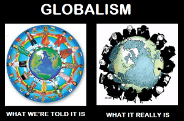

< < < Back
The Sociopolitical Implications Of r/K Selection Theory – Return Of Kings
A while back, I came across a thought-provoking article about r/K selection theory. The basic idea is that r-selected species are adapted for environments with unlimited resources, while K-selected species are adapted for competition. The typical examples of these are rabbits and wolves. As the article explains:
Rabbits (r-Strategy)
- They’re herbivores with near unlimited resources (never a shortage for grass).. The virtually unlimited resources are a primary reason why rabbits are not territorial. This is also part of the reason why they opt for breeding often; unlimited resources means they’re not going to starve.
- They have no defense against predators other than running. They do not have any loyalty towards their group. It makes no sense for a rabbit to rush to the aid of another rabbit being attacked. Then you’d just have two dead rabbits. Because they can be killed so easy, it makes sense to reach maturity as quickly as possible so they can begin birthing children.
- Hierarchies are pointless in rabbit society. Rabbits lives are rather simple; eat grass and run away from danger. There’s no need to invest heavily in their offspring. As such, there’s no need to prove who’s the superior (alpha) and the best candidate for passing on their genes.
Wolves (K-Strategy)
- They’re carnivores that must hunt to survive. Hunting requires more intelligence and training than grazing on grass. Due to the increased difficulty of hunting compared to grazing, more time is invested in training the offspring to survive.
- Because prey is limited, wolves must viciously protect their territory from intruders. While it might seem heartless, if another pack is allowed into their territory the supply of prey will be exhausted and both packs will starve to death.
- Wolves are monogamous/pair-bond. Because raising the offspring is so important for the continuation of the species, the wolves will pair for life in order to raise their young. As such, they will choose the best mate they can find to further improve their chances of birthing strong, healthy cubs. This process of choosing leads to hierarchies with an alpha male leading the pack. Wolves also wait longer before reproducing and generally have less offspring. If they reproduced early and often, there would be too many wolves for the ecosystem resulting in the consumption all the prey and starvation.
- Wolves are more complex. This is true for carnivores in general. Because carnivores typically live in groups, they must have more sophisticated ways to communicate. The same is true for their domesticated brethren. Look at a dog and you can easily identify if he is scared, happy, angry, or bored by his body language and barks. Can you tell the same moods on a rabbit?
This isn’t a completely binary distinction. For example, some herbivores (such as bovines) will flock in packs and defend themselves. Lions are more K-selected than domestic cats.
The social angle
Peacocking works, but be careful not to overdo it.
Humans are mainly K-selected; that’s what is natural for us. There are individual differences and statistical outliers, of course. As an extreme example, imagine two brothers; one picks up Atlas Shrugged and is inspired to become a successful businessman, and the other reads the Communist Manifesto and then continues to live in Mom’s basement where he smokes weed and posts social justice memes on 4chan all day. Compare also the factory worker who is a pillar of his community and is proud to bring home the bacon to his wife and kids, versus the starving artist who has yet to produce much of value.
Differing societies have their own average balance between r and K selection. Those mostly r-selected tend to be more collectivist; those more K-selected are generally individualist. In isolation, societies find their own level and work out what’s best for them according to their own unique cultures. When one group enters another group’s turf, problems can happen. I’ve already described how this was a factor in my witty take on the demise of the Neanderthals, who might have been too progressive to survive, rather than too backward as is often assumed. That, of course, was an analogy for what’s going on in today’s society.
This even has implications for mating strategies. What we’d now sometimes derisively call “provider game” used to be the only game in town, and was natural for our society at the time, as it had been since antiquity. After the Sexual Revolution, all the rules changed seemingly overnight, and what used to work became ineffective. The flowers, gifts, and poetry stuff once showed you were dependable and good-natured, which (believe it or not) used to be desired qualities. That will get you Friend Zoned now.
The weird thing is that today’s game strategies are an adaptation in response to our society’s unnatural shift from K-selection (where being hard-working and stable is valued) to r-selection (where being “exciting” and flashy is valued). This is why in today’s dating arena, those continuing to use traditional courtship strategies are like fish out of water. These days, being at least somewhat game-aware is pretty necessary even to get a steady girlfriend. These differing strategies lead to much confusion about what best exemplifies an alpha—a socially savvy and successful man, or a meth head ex-convict with missing teeth and a high “notch count”?
The political angle

The breakdown of the nuclear family explained in one picture.
Ideologies tend to support either K-selection or r-selection as a model for society. Now consider the part quoted about rabbits given above. Which ideology favors handing out unlimited free goodies, is anti-military, puts down traditional morality, believes in gun control, despises their own society, will run from a fight, seeks to eliminate the consequences of promiscuity, considers any hierarchy to be “privilege” or “oppression“, and doesn’t believe in self-improvement?
That certainly hits the highlights of the culture war. This presents a new perspective on why Social Justice Warriors want to re-invent society their way. All along we thought it was only cultural Marxism, but maybe there’s something even deeper going on psychologically with the SJWs.
This is reflected in policy arguments too; compare Bush the Elder’s “family values” with Hillary’s “it takes a village to raise a child”. As we can see, quite a bit of leftist ideology is basically about turning human society from the K-selected model into one friendly to the r-selected model. Two competing ideologies (or two societies living in the same space) with differing ideas about these things will come into conflict. The more K-selected ones will get themselves dragged down by the others if they let it happen, or even destroyed. Also, take a look at any bad neighborhood; consider it a low-investment parenting theme park.
In the wilderness, these things wouldn’t happen. Apex predators don’t tolerate rivals coexisting in their own turf. The smart lion drives away a pack of hyenas, and the smart bear chases away the foxes. In human societies, this has worked out quite differently, especially when clever manipulators weaponize our own societal values of tolerance, fairness, and all the rest of it against us.
The greatest problem is that we don’t actually have unlimited resources available to meet our wants and needs, like rabbits in a grassy field. All the free goodies a government hands out must come from taxpayers, with bureaucrats getting their piece of the action. (So who are the predators in that situation?) As Margaret Thatcher put it:
I think [The Labour Party] made the biggest financial mess that any government’s ever made in this country for a very long time, and Socialist governments traditionally do make a financial mess. They always run out of other people’s money. It’s quite a characteristic of them. They then start to nationalise everything, and people just do not like more and more nationalisation, and they’re now trying to control everything by other means. They’re progressively reducing the choice available to ordinary people.
In the Communist world, those faced with the task of implementing the silly theories of Karl Marx had to ration resources, which resulted in inefficiency and corruption. Things didn’t go according to theory, obviously. Ideologies out of touch with reality become dysfunctional pretty quickly.
The endgame

Now here’s something even more disturbing. In advanced species, adulthood means being able to fend for oneself. In the beginning, people relied on families and tribes (extended families writ large) for resources, protection, and support. Some degree of interdependence in a community is natural to us, since organized hunting and agriculture increased the odds of survival, and thus we’re social creatures. The head of the household called the shots in the family, and the chief led the tribe.
At the dawning of civilization, related tribes bound together into nations. The model of families living under kings was the norm up until the Age of Enlightenment, with the main drawbacks that the nobility (and those close to them) got rich at the expense of others, lorded it over their subjects, and sometimes got into short-sighted wars. Afterwards, the transition into democracies moderated some of these problems, though graft and corruption and badly-conceived wars still happened.
Now we’re moving into the “New World Order” model, where a few thousand plutocratic elites around the world use their wealth and influence to implement managed democracy, get into spit-in-your-eye wars, and other forms of skullduggery to influence things their way. They’re pushing to open the borders, erase national sovereignty, turn the diverse peoples of the world into a mass monoculture, and they’ve conspired to make the public unaware and compliant.
Overall, the elites are causing increased dependency on the nanny-state governments, which meanwhile neglect the public’s safety and well-being. They’ve shown great hubris, trying to live as kings and make us their serfs. Meanwhile, young adulthood has become increasingly an extened adolescence, and these days many are seeming more childlike than ever. The more all this goes on, the less citizens resemble independent adults.
The extreme model of this in the animal kingdom is with some insect species, such as ants and bees. Joseph Sobran used The Hive as a metaphor, and so have I. If you don’t feel like being one of their worker bees, or a neutered drone, then it’s time we get the globalists off our backs.
Read More: Cultural Collapse Theory: The 7 Steps That Lead To A Complete Culture Decline